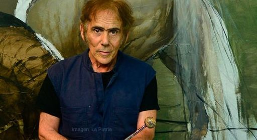
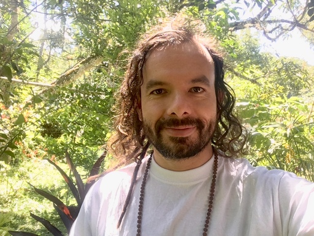
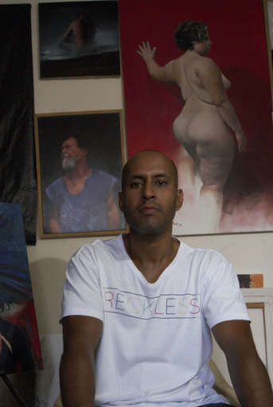

DAVID MANZUR

“El motivo del anverso de la moneda está orientado a reconocer los esfuerzos del municipio de Guacarí, Valle del Cauca, para conservar el
árbol de Samán, a través del cual el maestro Manzur resalta la importancia de los aspectos relacionados con la ecología y la preservación
del medio ambiente. El Samán se encuentra en México,
Guatemala, Cuba, Brasil, Venezuela, Ecuador, Perú y Bolivia. En Colombia sehalla en los departamentos del Valle del Cauca, Santander del
Sur, Santander del Norte, Costa Atlántica, en los valles de los ríos Magdalena y Cauca y en los Llanos Orientales”.
EIVAR MOYA
“Es un virtuoso del dibujo, cuyo trazo es abigarrado, magnetiza los cuerpos, los seda. Más alla ́de las figuras, lo que más impresiona son sus
atmósferas, el diálogo de los cuerpo, el dinamismo de sus silencios manchando los umbrales, la soledad y el tiempo. Su pintura está hecha
de tacto, de símbolos que materializan la concupiscencia, el sueño, los deseos, las carencias”
Su obra refleja ese silencio que mantiene a los pueblos aislados, un silencio sin eco ni resonancia, en su obra Eivar reflexiona sobre esa
necesidad de los pueblos excluidos de tener una voz. Con su pintura cuestiona esa actitud del que no habla, porque no quiere porque no
puede.
RENÉ VILLAREAL

“René Villareal es un artista silencioso que aprendió a dominar el color de una forma armoniosa y bella, convirtiendo esto en su principal
estandarte y caballito de batalla”
MARTIN AYALA
“El indígena depende de la selva, de su territorio, porque viven de la caza, la pesca y la recolección; por lo tanto tienen un cuidado y respeto
por las selvas, los ríos y los animales”
ALEJANDRO ARTEAGA

“La temática del paisaje que he desarrollado a partir de mi pasión hacia la naturaleza, de las muchas veces que he visitado algún bosque
y pasado horas contemplándolo como queriendo ver y entender lo que allí ocurre me ha llevado a reflexionar sobre la manera perfecta
como la naturaleza interactúa consigo misma. Mi obra habla acerca de este mundo natural y su misteriosa composición e interacción, real
o no, de la forma como lo he percibido y como lo siento en mi interior”
JAVIER LÓPEZ
“Esta obra es un autoretrato y un retrato de muchos; es un homenaje a las comunidades indígenas que sufren discriminación, abandono
y violencia en Colombia”
DANIEL LÓPEZ

“Los assurini o indios rojos cómo se les llama debido al uso abundante del orocum un fruto del árbol de Boca orellana, siendo su
forma visual y corporal en la que las culturas expresan su tradición ancestral.
Es así como he podido llegar al plano pictórico aprovechando todos los elementos y rasgos pintorescos que nos brinda el personaje
de este retrato que desborda su color rojo”
ANDREA OCAMPO
“Las mujeres indígenas colombianas juegan un papel importante y dinamizador dentro de sus culturas, economías y organización
comunitaria... Las viudas deben asumir las riendas del hogar y salvaguardar la estructura social indígena y la vivencia cultural de su
pueblo. La mujer indígena colombiana ha enseñado a cultivar la tierra, guarda las mejores semillas para la siembra y ha luchado con ahínco
por conservar la cultura, la tierra y los ecosistemas. No obstante, el conflicto armado en Colombia y el desplazamiento forzado invisibiliza
la condición de la mujer indígena, la maltrata y viola sus derechos. Todo esto ocurre en un estado de indefensión y abandono que genera
la guerra en medio de la pobreza y hacinamiento a que son sometidas. extracción minera y megacultivos.Es por todo esto que quise en
mi obra resaltar la belleza de la mujer indígena que a sido abandonada tanto cultural como socialmente Quise exaltarla como un tesoro
y un patrimonio cultural inmaterial es la que más lleva las riendas de su hogar y de su comunidad la mujer indígena sigue organizándose,
movilizándose, exigiendo sus derechos y rechazando todo acto de violencia contra su vida y sus comunidades. Como gestora de vida,
la mujer indígena se ha propuesto reconstruir los principios, procedimientos propios y valores originarios desde sus comunidades y en los
sistemas educativos, declarándose como máximas defensoras de la madre tierra y la vida.“
IVÁN HURTADO

“La palabra se traduce como remo en la lengua de la comunidad Ticuna. Para la pieza pictórica que planteo, indago sobre algunas de las
varias comunidades indígenas que hacen parte de la Amazonía, desarrollando elementos que se acerquen a una interpretación plástica
donde elaboro, por ejemplo, la sutura en la tela (soporte), uniendo dos secciones, que pretende representar la necesidad de alianza entre
la visión de una sociedad colombiana permeada por el pensamiento occidental y la mirada particular de las comunidades indígenas,
que dista de nuestra concepción de mundo. En la indagación, me encuentro con un símbolo que, en lengua de la comunidad Ticuna, se
denomina naemü`, que traducido al español significa El Remo. Este es un elemento que simboliza, el paso de un lugar a otro, el enfrentar
dificultades y superarlas, que denota además todos los elementos que conforman el mundo (plantas, animales, agua, hombre, aire) *- .
Dentro de las capas del pigmento surge y se desvanece este símbolo, en ese trasegar sobre la superficie suturada y saturada de color,
para transmitir sensaciones de la forma que se trunca en el vacío, desdibujándola al infinito”
ANDRÉS ALARCÓN
Andrés Alarcón es un artista plástico colombiano, nacido en Bogotá, profesor en la Escuela de Artes Guerrero que se proyecta como una promesa de la pintura figurativa contemporánea. Le atrae el realismo y sentir como se transforman las cosas que observa mientras pinta sobre el lienzo, y así generar un acercamiento para crear una ilusión.
LUIS VELANDIA
“Una obra de carácter sociopolítico. Narra el conflicto armado através del muro que simula geograficamente el departamento del cauca. Las
acciones belicas se concentran en el territorio nororiental. Entre los grupos ilegales mas recordados el bloque calima de las autodefensas;
frentes 6,8,30, frente jacobo arenas y frente Gabriel Galvis. Las grietas representan fronteras y el corredor fluvial de drogas al oceano
pacifíco. Cada punto representa una azonada o atentado.
La mujer y el niño de la cultura Misak recuerdan la situación de los pueblos indígenas en medio del conflicto, su participación y la posibilidad
de salir adelante y mantener su esencia. Se contrasta ademas la “no violencia” de los trazos infantiles en la parte inferior de la puerta y la
“violencia” representada en el muro. Finalmente el elemento mas simbólico Misak; la pañoleta roja en honor a “los caidos” o muertos para
recordar que la paz aun no llega en estas regiones del país. Ejemplo de ello las fechas en el muro recordando a uno de los lideres sociales
asesinados en mayo del 2020”
CLAUDIA SERRANO
“Cuéntame un cuento, cuéntame de ti abuelo... porque más que fantasía, en tus cuentos están tus historias, esa parte de tu vida, esa vida
que llevo como impronta en mi. Benditas tus vivencias que me enseñan el verdadero valor de lo importante, que me cuentan de dónde
vengo y despiertan en mí el arraigo por mi origen. Veo tus manos marcadas por tu experiencia, tus ojos con mirada clara y con algo de
esperanza recordando aquello que hoy evocas con alegría y algo de nostalgia.
Cuéntame tus historias abuelo, cuéntame de la abundancia infinita de la tierra, cuéntame esos secretos que el viento trajo para ti y la
libertad que experimentaste al estar en vuelo, cuéntame de lo que el agua te dejó y también de aquello que se llevó, cuéntame del fuego
que arrasó lo que amaste y lo que pudo transformar. Cuéntame de ti, de donde vengo, y por favor abuelo recuérdame quién soy”
MIGUEL GOYENECHE
“Los cuadros de Miguel hablan del movimiento. Su finalidad es provocar sensaciones en el espectador. Esta pintura está ormada por
bloques de color rectangulares que parecen flotar sobre el fondo, dejando ver las texturas del diagrama inicial, como lo plantea
Deleuze (1). Contraste de simultaneidad: consecuencia inmediata del contraste de complementarios el verde como color significante de la
naturaleza y el rojo de los arboles ausentes, la caída es una analogía directa.”
JUAN M ARREAZA

“Este dibujo es una breve representación del reflejo que puede brindarnos una cultura entre otras tantas existentes en nuestro país; que
desde labores investigativas intentan recuperar sus tradiciones, revisando sus orígenes mitológicos, espirituales y ancestrales materializados
en un espacio común de compartimiento, de pensamiento y coexistencia.
Un espacio en el que tradicionalmente habita la comunidad organizados por familias en diferentes compartimientos internos y en el
centro el chamán. Donde también se celebran rituales y desde donde los sabedores equilibran el mundo, protegen de los espíritus y
curanla enfermedad. La experiencia de habitarla compartiendo saberes y rituales con la propia cultura, además de sorprenderme con
sus dimensiones, construcción, y concepto, me llevó a verla como un modelo a seguir en el sentido de comprender algunas necesidades
básicas de un pueblo. Su relación con el entorno como fuente de alimento y energía, y las relaciones interpersonales basadas en el respeto
que funcionan como un eje de la vida al que llaman UKUO. Por esto y con razón del tiempo que actualmente vivimos, creo pertinente la
ilustración del Pureido Wasawirä “vivienda tradicional para compartir” del pueblo Piaroa, que ancestralmente se ha ubicado en la cuenca
media del río Orinoco entre Colombia y Venezuela”
ALEXANDER PRADA

“Pequeño Guardian” es un futuro cacique de una tribu de la Amazonia, que sera enseñado en todos los secretos de la selva, entre esos
protegerla con su vida propia su sangre, selva y sangre son uno solo (por eso el color rojo predomina la obra) En su mano posee la lanza
de poder mostrando que es un guerrero, sentado sobre un tronco en el agua que muestrasu equilibrio con la naturaleza, mostrandose en
la entrada de la selva, con su decoroso plumaje en corona que indica que es directo linaje del cacique...
RICARDO VILORIA
“Es imposible ser indiferente ante la energía de un indígena, lo que irradian sus ojos tiene la fuerza de la naturaleza misma, de los bosques
en donde habita y los antepasados que lo preceden. Sus ojos son una de las puertas de acceso más grandes hacia el corazón de sus
tesoros más preciados.
Quise con esta pintura dejar abierta una vía atmosférica a todo lo que admiro, venero y respeto en ellos. Usé pocos colores, han sido
también pocos los momentos de contacto que la mayoría de citadinos hemos tenido con un indígena, el espectro de nuestra visión hacia
a ellos se reduce a pocas certezas y a grandes misterios.
Pero, aunque sus saberes y enseñanzas son guardados con celo, el impacto que generan con su figura es de una belleza indiscutible,
belleza que depósito con esta imagen en los ojos de una indígena”
DIANA GAMBOA
“He convertido el papel en mi principal herramienta de expresión. Esto me ha permitido convertirme en inventora; llevo más de 30 años
plegando gracias a mi padre quien hoy tiene 85 años y es uno de los grandes maestros de Origami en el Japón. Mi búsqueda a través
de este oficio está relacionada con una naturaleza interior, tiene un trasfondo transformados dende conduce a reflexionar sobre la forma
como se teje una sociedad; comunidades de pensamientos y la relación que tenemos con el espacio y el tiempo”
ALEJANDRO RUBIANO
“Esta escultura es un homenaje a la naturaleza de los tepuyes del Parque Nacional Natural Serranía de Chiribiquete (Caquetá y Guaviare),
mesetas que se alzan con agrestes formas apilastradas, estribaciones estas que con enormes masas en su parte superior o al revés, tal
como se puede disponer de esta pieza tridimensional; invertida o enhiesta, no hay un derechoni revés, es como la sabiduría del taita, no
importa quien tiene la razón sino qué enseñanza te deja.
Posee además otras posiciones menos estables pero interesantes desde cualquier punto de vista que se le mire. Proyecta sombras de
formas inusitadas per simétricas. A modo de tótem místico-ritual posee y brinda gran armonía a sus observadores. Hoy hablamos de
objetos de culto, como lo podría ser este poliedro hueco tradiciones y santuarios de culto que deben ser mejor protegidos, me refiero a los
pobladores nativos de las selvas”
EFRAÍN ZUÑIGA

“Interior es una obra que hace parte de una serie llamada Visitas efímeras en la que la neblina es el eje central. En esta pieza se
evidencia la majestuosidad de la selva de montaña realizada compositivamente en diferentes planos con un
cromatismo limitado teniendo en cuenta mi visión personal y estado de ánimo. Además de lo anterior, la presencia humana no tiene
cabida, solo se da desde afuera como
contemplador del paisaje que le es ajeno”
NICOLE FURMAN

“En las obras presentadas por Furman de “Mariposa, Regresa” se destacan las consecuencias del desplazamiento forzado que la
acción Humana causa a las comunidades Monarca al dejarlas sin hogar; subrayando, irónicamente, la destrucción que llega a causar la
construcción. A su vez, las obras de papel, buscan mostrar los patrones migratorios de ellas, reconocido como el fenómeno migratorio mas
evolucionado dentro de todas las especies de mariposas e insectos en nuestro ecosistema. La aglomeración de cienes, o, en instancias,
miles de mariposas de papel en las obras, en constante movimiento, buscan recordarnos a todos que si la deforestación no para, las
mariposas ya no tendrán movimiento, sus magníficos viajes de Norte a Sur y Sur a Norte finalizados, y la magia de su transformación
terminara Apagada”
SAIR GARCÍA
“El trabajo de Sair García, como toda obra de arte válida en esta época de fake news y escepticismo, es susceptible a varias aproximaciones,
pero, aunque rara vez aparezcan figuras en sus representaciones, es claro que todas ellas se hallan orientadas hacia la consideración de
los avatares de la sociedad y del hombre contemporáneo. El protagonista directo de su producción es el río, que ha constituido desde la
Grecia antigua la metáfora natural de la vida que fluye y se transforma en un inevitable y continuo proceso de nacimiento y destrucción.
Pero, además, se trata del río Magdalena, el río de Colombia, y el contexto en el cual se presenta, así como muchas de las consideraciones
que suscita, se extienden más allá de sus riberas conduciendo a reflexionar sobre aspectos de la vida actual y también, al reconocimiento
de la agudeza perceptiva del artista, de su logro estético y de su virtuosismo”
ALEX DE LA TORRE
”Miles de hectáreas de bosque tropical desaparecen cada año debido a la tal indiscriminada, y a los actos de devastación a los que
periódicamente son sometidas grandes extensiones de selva virgen y de territorios declarados reservas forestales. Como integrantes que
somos de una sociedad que se dice civilizada, y comprometidos con la defensa del medio ambiente, estamos en la obligación de
reflexionar sobre la función que tenemos para garantizar un hábitat que permita condiciones por venir. Al superponer los elementos contra
incendios industriales a la escena selvática, se estace un diálogo directo entre el espectador y la problemática vegetal, aparentemente
alejada del medio urbano. Es esa la intención que predomina en esta serie”
GERMÁN TÉLLEZ
“El tejido como manifestación plástica, nos recuerda también los muchos tejidos que nos acompañan en la vida: los tejidos como familia,
cómo nación, cómo historia, cómo alianza, cómo comunidad y como especie. Los colombianos estamos ineludiblemente tejidos con los
pueblos indígenas y campesinos, cómo ancestros y como compatriotas; a favor de eso, el hilo más fuerte que nos atraviesa, debe ser el
de la hermandad y la empatía.
Creo que uno de los aspectos más interesantes del arte, es su capacidad de recrear una experiencia de lo místico, libre de las imposiciones
dogmáticas y colonizadoras del formalismo religioso. Símbolos, Templos y lugares sagrados pueden crearse en la pintura y con ellos dar un
lugar a, quizás la más profunda de las inclinaciones humanas, la búsqueda de lo espiritual”
ANGIE VEGA

“El ritual de la Pelazón, como iniciación de la mujer a la vida adulta, hace parte de los ceremoniales culturales de la comunidad
amazónica de los Ticuna. A pesar que ha sido abandonado por algunos grupos de esta comunidad, tanto por la influencia de
la iglesia evangélica como por la afluencia de otros valores y paradigmas culturales, su realización sigue siendo importante para
muchas mujeres y hombres de esta etnia. El ritual comienza a prepararse cuando el cuerpo de la joven cambia y tiene su primera
menstruación. La joven debe permanecer aislada y las únicas personas que pueden visitarla son su madre y una tía paterna, quienes
deben estar atentas a su cuidado. El solo contacto con un hombre es percibido como la interrupción del proceso de desarrollo que
la joven vive en ese momento, además deben estar alerta a los espíritus de la selva (llamados ngo-ogü) que tratan de ponerse en
contacto con ella”
JESSICA ZAMORA
“El rezo del pescado es uno de los rituales que el pueblo Sikuani busca conservar como una tradición sagrada, este ritual marca el paso a
la pubertad con la primera menstruación de las mujeres de la comunidad. Después de rezos y bailes se consagra a la niña a los espíritus,
toma un baño en un claro de agua, se cambia y junto con su médico tradicional se prepara para su nueva vida”
LUIS F BOHORQUEZ
“Mi obra se ha desarrollado en el campo del dibujo tridimesional. La naturaleza es mi tema de inspiración, investigando la anatomía de
los animales, la vigorosidad de los árboles. Han atravesado escalas diferentes desde piezas pequeñas a manera de bocetos, hasta
gigantismos para ser exhibidos en plaza pública; algunas de mis esculturas han tomado un carácter vivo desarrollando una técnica para
hospedar y hacer prosperar materia viva sobre sus obras a manera de piles”
DOUGLAS MENDOZA

“A mi lo que me interesa es el color. A mi lo que me interesa es el arte.” Douglas lo repite constantemente, pues es lo que define su vida como
artista. Su obra se apoya en los colores vibrantes, exponiendo la naturaleza y los paisajes coloridos de una Guajira natal, acompañada
de una estructura que se deja llevar por su imaginación para un trabajo creativo aferrado a la realidad. Su estructura: La capa que permite
plasmar su ideal en un lienzo, con pinceladas para llegar hasta el recuerdo más íntimo y propio. La capa que trae el color al cuadro, donde
se plasma el paisaje y los juegos de la naturaleza. Y la última capa, con detalles gráficos, aplicando gestos propios como artista.
Mendoza trabaja sobre las imágenes que tiene en su memoria de los paisajes de infancia que él conoció. “Siento que tanto en sus cuadros
como en él, vive esa fuerza caribe, buscando atrás de la palabra la otra palabra viva, y en el cuadro, atrás del color, el alucinado color
que interprete la modernidad del Paisaje americano, su vigor estival y sus sombras, que no anegan su claridad.” Afirmó Fausto Panesso
hablando sobre el artista, y concluyó diciendo: “esta paleta plástica de tonos inconfundibles por lo personal, en las suntuosidades del óleo,
va en camino de una madurez espléndida” alabando la obra de Mendoza”
WALBERT PÉREZ

“Son alteraciones que al combinar color-sentimientos- emociones crea un mundo infinito de composiciones y azahar, es un gran caos que
se le puede dar cierto orden a nivel de composición en una superficie bidimensional”
ALFONSO BONILLA
“Utiliza las herramientas tecnológicas del diseño gráfico en combinación con una exposición particular de la imagen, que por medio
de superposiciones y una configuración subjetiva de la composición de cada pieza, busca comunicar su mensaje, ofreciendo una
reconfiguración de la realidad por medio de cada una de sus propuestas que son de gran riqueza cromática.
Artista emergente, su trabajo dialoga con facilidad con el público contemporáneo ávido de imágenes que logren conmover su día a día en
medio de la pantalla global en la que vivimos. Su obra es una muestra inequívoca del tiempo hiper – moderno en el que vivimos”
RÁMIREZ VILLAMIZAR

“Vinculado al arte geométrico, Ramírez no fue un epígono más, sino que realizó una obra personal, caracterizada por la relación estrecha
de unas formas planas que, presididas por la línea recta o la línea curva, por diseño y color se imbrican o se engranan entre sí. A veces
la composición está dominada por las curvas, otras veces sólo hay rectas, aunque en la mayoría de los casos aparecen unas y otras
en los más diversos acoplamientos. El colorido es variado, pero hay un predominio del rojo, el azul, el verde, casi siempre puros, y de los
neutros, el negro, el blanco y los grises. La pintura abstracta de Ramírez fue el preámbulo necesario de su obra de escultor. Es tal la unidad
de toda su producción, que algunos cuadros anticipan claramente sus primeros relieves e, incluso, anuncian las formas y los espacios de
sus esculturas libres”
FERNANDO MURCÍA
“La tierra llora, el silencio dejó de existir, la muerte se esparce por doquier, un ser mata la vida, se pasea impune, no hace caso de la tristeza
que causan sus actos, su sed de más.
La tierra llora, sus lágrimas alimentan ríos, sus lágrimas bajan por las hojas, por los troncos, por las montañas, serpentean libres, dan cuenta
de la vida que se escapa entre las manos de todos nosotros; pero la vida se esfuerza por resistir, las manos poderos y sabias de los
hermanos mayores, buscan la sanación de la Madre Tierra, de quien nos dio la vida, a quien pertenecemos.”
ALVARO BARRIOS
“Álvaro Barrios es conocido por su heterogénea obra, influenciada por el Surrealismo, el Pop Art y el Arte Conceptual. Se sirve de la temática
de la cultura popular de los comics, al incluir en sus composiciones textos, líneas marcadas y colores vívidos. Desde los año 70, la obra de
Barrios ha estado muy influenciada por el arte de Marcel Duchamp. Al representar personajes ficticios en relación con los objetos de arte
moderno de Duchamp, Barrios desafía la imaginación y la conciencia del espectador. Es la temática paradójica y la disposición de sus
composiciones lo que da a su obra una cualidad llena de sentido del humor, y a la vez intrigante”